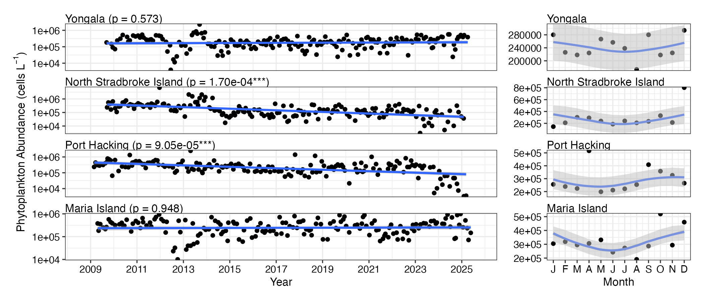
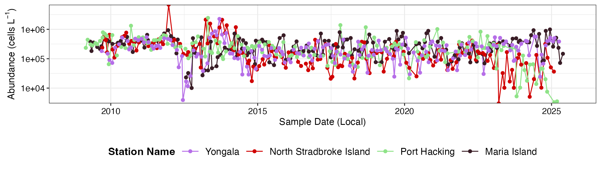
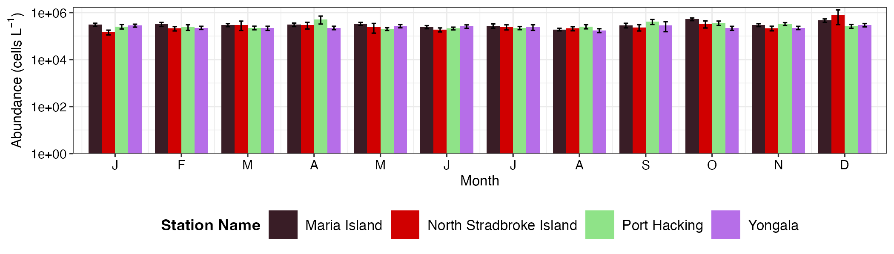
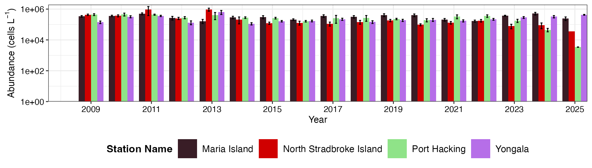
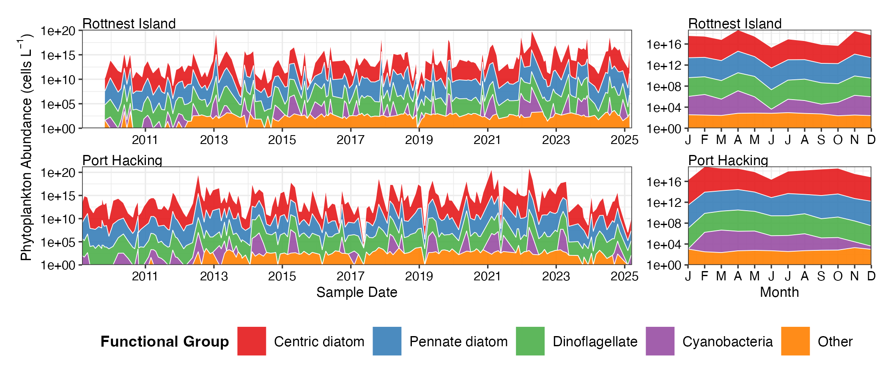
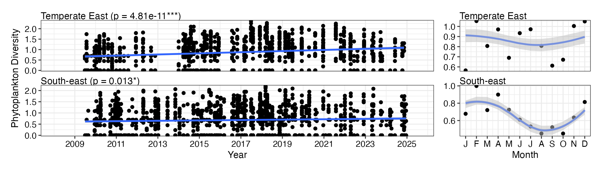

National Reference Stations
Trend Analysis
NRSp <- planktonr::pr_get_Indices("NRS", "P") %>%
filter(Parameters == "PhytoBiomassCarbon_pgL") %>%
filter(StationCode %in% c("YON", "NSI", "PHB", "MAI"))
p1 <- planktonr::pr_plot_Trends(NRSp, Trend = "Raw", Survey = "NRS", method = "lm", trans = "log10")
p2 <- planktonr::pr_plot_Trends(NRSp, Trend = "Month", Survey = "NRS", method = "loess")
p1 + p2 +
ggplot2::theme(axis.title.y = ggplot2::element_blank()) + # Remove y-title from 2nd column
patchwork::plot_layout(widths = c(3, 1), guides = "collect")
Climatologies
(p1 <- planktonr::pr_plot_TimeSeries(NRSp, Survey = "NRS", trans = "log10"))
(p2 <- planktonr::pr_plot_Climatology(NRSp, Survey = "NRS", Trend = "Month", trans = "log10"))
(p3 <- planktonr::pr_plot_Climatology(NRSp, Survey = "NRS", Trend = "Year", trans = "log10"))
Functional Groups
FG <- pr_get_FuncGroups(Survey = "NRS", Type = "P") %>%
dplyr::filter(StationCode %in% c("ROT", "MAI"))
p1 <- planktonr::pr_plot_tsfg(FG, Scale = "Actual")
p2 <- planktonr::pr_plot_tsfg(FG, Scale = "Actual", Trend = "Month") +
ggplot2::theme(axis.title.y = element_blank())
p1 + p2 +
patchwork::plot_layout(widths = c(3,1), guides = "collect") &
theme(legend.position = "bottom")
Continuous Plankton Recorder
Trend Analysis
CPRp <- planktonr::pr_get_Indices("CPR", "P") %>%
filter(Parameters == "AvgCellVol_um3") %>%
filter(BioRegion %in% c("South-east", "Temperate East"))
p1 <- planktonr::pr_plot_Trends(CPRp, Trend = "Raw", Survey = "CPR", method = "lm", trans = "log10")
p2 <- planktonr::pr_plot_Trends(CPRp, Trend = "Month", Survey = "CPR", method = "loess")
p1 + p2 +
ggplot2::theme(axis.title.y = ggplot2::element_blank()) + # Remove y-title from 2nd column
patchwork::plot_layout(widths = c(3, 1), guides = "collect")
Climatologies
p1 <- planktonr::pr_plot_TimeSeries(CPRp, Survey = "CPR", trans = "log10") + theme(legend.position = "none", axis.title.y = element_blank())
p2 <- planktonr::pr_plot_Climatology(CPRp, Survey = "CPR", Trend = "Month", trans = "log10") + theme(legend.position = "none")
p3 <- planktonr::pr_plot_Climatology(CPRp, Survey = "CPR", Trend = "Year", trans = "log10") + theme(legend.position = "bottom", axis.title.y = element_blank())
wrap_plots(p1, p2, p3, ncol = 1)
Functional Groups
FG <- pr_get_FuncGroups(Survey = "CPR", Type = "P") %>%
filter(BioRegion %in% c("South-east", "Temperate East"))
p1 <- pr_plot_tsfg(FG, Scale = "Actual")
p2 <- pr_plot_tsfg(FG, Scale = "Actual", Trend = "Month") +
theme(axis.title.y = element_blank())
p1 + p2 +
patchwork::plot_layout(widths = c(3,1), guides = "collect") &
theme(legend.position = "bottom")